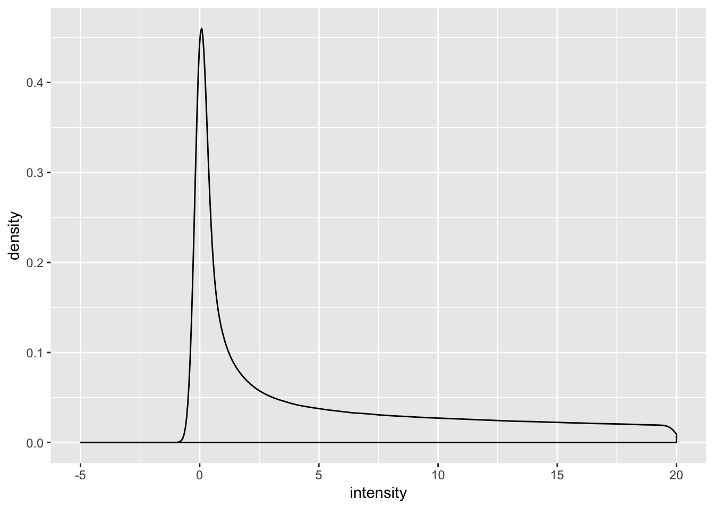
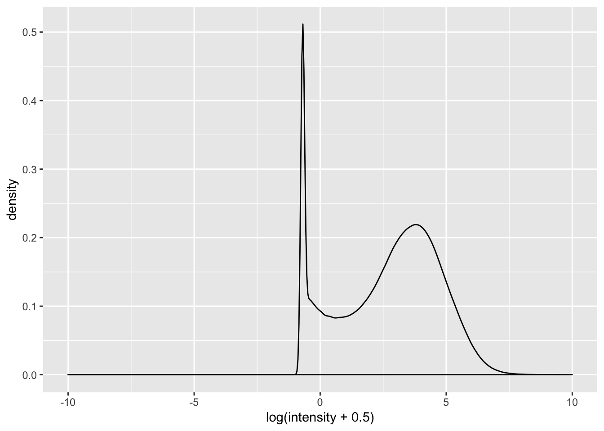
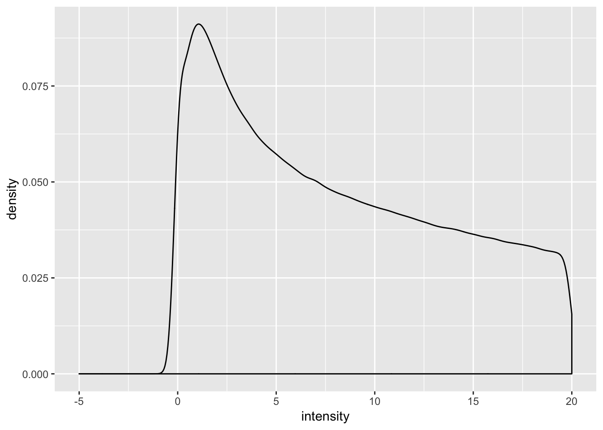
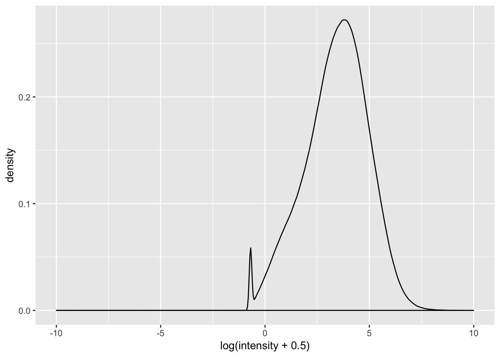
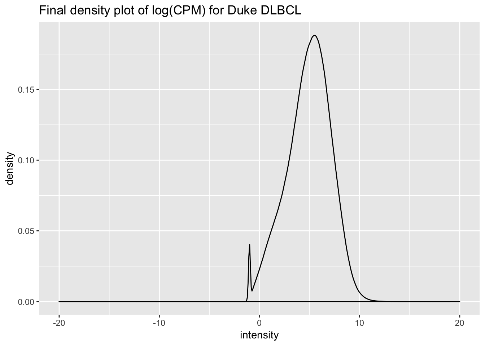

Last updated: 2019-06-28
Checks: 7 0
Knit directory: dlbcl_landscape/
This reproducible R Markdown analysis was created with workflowr (version 1.4.0). The Checks tab describes the reproducibility checks that were applied when the results were created. The Past versions tab lists the development history.
Great! Since the R Markdown file has been committed to the Git repository, you know the exact version of the code that produced these results.
Great job! The global environment was empty. Objects defined in the global environment can affect the analysis in your R Markdown file in unknown ways. For reproduciblity it’s best to always run the code in an empty environment.
The command set.seed(20190613) was run prior to running the code in the R Markdown file. Setting a seed ensures that any results that rely on randomness, e.g. subsampling or permutations, are reproducible.
Great job! Recording the operating system, R version, and package versions is critical for reproducibility.
Nice! There were no cached chunks for this analysis, so you can be confident that you successfully produced the results during this run.
Great job! Using relative paths to the files within your workflowr project makes it easier to run your code on other machines.
Great! You are using Git for version control. Tracking code development and connecting the code version to the results is critical for reproducibility. The version displayed above was the version of the Git repository at the time these results were generated.
Note that you need to be careful to ensure that all relevant files for the analysis have been committed to Git prior to generating the results (you can use wflow_publish or wflow_git_commit). workflowr only checks the R Markdown file, but you know if there are other scripts or data files that it depends on. Below is the status of the Git repository when the results were generated:
Ignored files:
Ignored: .DS_Store
Ignored: .Rhistory
Ignored: .Rproj.user/
Untracked files:
Untracked: analysis/enrichment.Rmd
Untracked: analysis/newgs.Rmd
Untracked: code/gsva1.r
Untracked: code/gsva1.sh
Untracked: code/run_gsva1.pbs
Untracked: data/NIH_PDL1_amp_cases.csv
Untracked: data/NIH_PDL1_nonamp_cases.csv
Untracked: data/aliquot.tsv
Untracked: data/c2_human_immune_genesets.gmt
Untracked: data/dlbcl_total_immune_gset_v1_results.rds
Untracked: data/gdc_clinical_data.json
Untracked: data/gdc_files_and_case_ids.json
Untracked: data/gencode.v22.primary_assembly.annotation.gtf.geneinfo
Untracked: data/gset_ids_complete.rds
Untracked: data/htseq_counts/
Untracked: data/sample.tsv
Untracked: data/temp.dgelist_limma.rds
Untracked: output/dlbcl_expr_matrix.csv
Untracked: output/duke_expression_set_cleaned_log.rds
Untracked: output/duke_expressionset.rds
Untracked: output/expr_matrix.csv
Untracked: output/nci_dlbcl_annotation.csv
Untracked: output/nci_dlbcl_unprocessed_counts.csv
Untracked: output/nci_expressionset.rds
Untracked: output/total_immune_gset_v1.rds
Note that any generated files, e.g. HTML, png, CSS, etc., are not included in this status report because it is ok for generated content to have uncommitted changes.
These are the previous versions of the R Markdown and HTML files. If you’ve configured a remote Git repository (see ?wflow_git_remote), click on the hyperlinks in the table below to view them.
| File | Version | Author | Date | Message |
|---|---|---|---|---|
| html | 3cee826 | mleukam | 2019-06-27 | Build site. |
| Rmd | 107e89b | mleukam | 2019-06-27 | working notebook for cleaning and normalizing duke expression data with some |
RNaseq libraries were hybridized to Human All Exon V6 + 3′ UTR capture baits (Agilent, Cat. #5190-9306) as described previously (Cieslik et al., 2015). Each capture pool contained 24 libraries at 50 ng each for a total of 1200 ng of DNA. The pools were lyophilized using the speed vacuum technique. The libraries were first denatured and blocked at 95 C for 5 minutes, followed by holding at 65 C. The capture baits were mixed with RNase OUT and incubated for 2 minutes at 65 C. Hybridization buffer was mixed with the baits, followed by addition of the denatured libraries. The hybridization reaction was held at 65 C for 24 hours, followed by washing and amplification. These sequencing libraries were assessed for quality with the Bioanalyzer 2100 (Agilent) using the Agilent DNA 1000 Kit per manufacturer’s instructions. Libraries of high quality (e.g., with size distribution between 120-400bp and sufficient quantity for sequencing) were subjected to high throughput sequencing using the Illumina HiSeq 2500 platform per manufacturer’s instructions using HiSeq V4 125 PE, to generate an average of 10 million reads per sample.
The following processing steps were carried out on the Gardner Supercomputing Cluster due to system requirements:
Parameters set for downstream analysis with limma voom following examples here: https://bioconductor.org/packages/release/bioc/vignettes/tximport/inst/doc/tximport.html
Clear workspace
rm(list = ls())Load packages
library("tidyverse")── Attaching packages ─────────────────────────────────────────────── tidyverse 1.2.1 ──✔ ggplot2 3.1.1 ✔ purrr 0.3.2
✔ tibble 2.1.3 ✔ dplyr 0.8.1
✔ tidyr 0.8.3 ✔ stringr 1.4.0
✔ readr 1.3.1 ✔ forcats 0.4.0── Conflicts ────────────────────────────────────────────────── tidyverse_conflicts() ──
✖ dplyr::filter() masks stats::filter()
✖ dplyr::lag() masks stats::lag()library("edgeR")Loading required package: limmalibrary("limma")
library("Biobase")Loading required package: BiocGenericsLoading required package: parallel
Attaching package: 'BiocGenerics'The following objects are masked from 'package:parallel':
clusterApply, clusterApplyLB, clusterCall, clusterEvalQ,
clusterExport, clusterMap, parApply, parCapply, parLapply,
parLapplyLB, parRapply, parSapply, parSapplyLBThe following object is masked from 'package:limma':
plotMAThe following objects are masked from 'package:dplyr':
combine, intersect, setdiff, unionThe following objects are masked from 'package:stats':
IQR, mad, sd, var, xtabsThe following objects are masked from 'package:base':
anyDuplicated, append, as.data.frame, basename, cbind,
colMeans, colnames, colSums, dirname, do.call, duplicated,
eval, evalq, Filter, Find, get, grep, grepl, intersect,
is.unsorted, lapply, lengths, Map, mapply, match, mget, order,
paste, pmax, pmax.int, pmin, pmin.int, Position, rank, rbind,
Reduce, rowMeans, rownames, rowSums, sapply, setdiff, sort,
table, tapply, union, unique, unsplit, which, which.max,
which.minWelcome to Bioconductor
Vignettes contain introductory material; view with
'browseVignettes()'. To cite Bioconductor, see
'citation("Biobase")', and for packages 'citation("pkgname")'.From the cluster:
# txi <- readRDS("txi.limma.rds")
# > str(txi)
#List of 5
# $ abundance : num [1:58721, 1:771] 1.89 0.687 150.765 14.069 51.961 ...
# ..- attr(*, "dimnames")=List of 2
# .. ..$ : chr [1:58721] "ENSG00000000003.14" "ENSG00000000005.5" "ENSG00000000419.12" #"ENSG00000000457.13" ...
# .. ..$ : chr [1:771] "648.a.1kDLBCL.DLBCL.SL137547.RNA" "658.a.1kDLBCL.DLBCL.SL137175.RNA" #"683.a.1kDLBCL.DLBCL.SL137187.RNA" "684.a.1kDLBCL.DLBCL.SL137583.RNA" ...
# $ counts : num [1:58721, 1:771] 18.04 3.02 502.55 231.24 653.92 ...
# ..- attr(*, "dimnames")=List of 2
# .. ..$ : chr [1:58721] "ENSG00000000003.14" "ENSG00000000005.5" "ENSG00000000419.12" #"ENSG00000000457.13" ...
# .. ..$ : chr [1:771] "648.a.1kDLBCL.DLBCL.SL137547.RNA" "658.a.1kDLBCL.DLBCL.SL137175.RNA" #"683.a.1kDLBCL.DLBCL.SL137187.RNA" "684.a.1kDLBCL.DLBCL.SL137583.RNA" ...
# $ infReps :List of 771
# ..$ 648.a.1kDLBCL.DLBCL.SL137547.RNA : num [1:58721, 1:100] 16 4 461 229 559 ...
# .. ..- attr(*, "dimnames")=List of 2
# .. .. ..$ : chr [1:58721] "ENSG00000000003.14" "ENSG00000000005.5" "ENSG00000000419.12" #"ENSG00000000457.13" ...
# .. .. ..$ : NULL
# dgelist <- txi$counts
# str(dgelist)
# Formal class 'DGEList' [package "edgeR"] with 1 slot
# ..@ .Data:List of 3
# .. ..$ : num [1:16178, 1:771] 18.04 3.02 502.55 231.24 653.92 ...
# .. .. ..- attr(*, "dimnames")=List of 2
# .. .. .. ..$ : chr [1:16178] "ENSG00000000003" "ENSG00000000005" "ENSG00000000419" #"ENSG00000000457" ...
# .. .. .. ..$ : chr [1:771] "648.a.1kDLBCL.DLBCL.SL137547.RNA" #"658.a.1kDLBCL.DLBCL.SL137175.RNA" "683.a.1kDLBCL.DLBCL.SL137187.RNA" #"684.a.1kDLBCL.DLBCL.SL137583.RNA" ...
# .. ..$ :'data.frame': 771 obs. of 4 variables:
# .. .. ..$ group : Factor w/ 1 level "1": 1 1 1 1 1 1 1 1 1 1 ...
# .. .. ..$ lib.size : num [1:771] 7664006 13270246 8620210 5512745 8874452 ...
# .. .. ..$ norm.factors: num [1:771] 1.014 0.952 0.947 0.843 0.938 ...
# .. .. ..$ lane : Factor w/ 7 levels "C7FYAANXX","C7U9KANXX",..: 7 5 5 7 7 7 7 7 7 7 #...
# .. ..$ :'data.frame': 16178 obs. of 4 variables:
# .. .. ..$ ensembl_gene_id: chr [1:16178] "ENSG00000000003" "ENSG00000000005" #"ENSG00000000419" "ENSG00000000457" ...
# .. .. ..$ hgnc_symbol : chr [1:16178] "TSPAN6" "TNMD" "DPM1" "SCYL3" ...
# .. .. ..$ chromosome_name: chr [1:16178] "X" "X" "20" "1" ...
# .. .. ..$ gene_biotype : chr [1:16178] "protein_coding" "protein_coding" "protein_coding" #"protein_coding" ...Read in data
dgelist <- readRDS("data/temp.dgelist_limma.rds")
str(dgelist)Formal class 'DGEList' [package "edgeR"] with 1 slot
..@ .Data:List of 3
.. ..$ : num [1:16178, 1:771] 18.04 3.02 502.55 231.24 653.92 ...
.. .. ..- attr(*, "dimnames")=List of 2
.. .. .. ..$ : chr [1:16178] "ENSG00000000003" "ENSG00000000005" "ENSG00000000419" "ENSG00000000457" ...
.. .. .. ..$ : chr [1:771] "648.a.1kDLBCL.DLBCL.SL137547.RNA" "658.a.1kDLBCL.DLBCL.SL137175.RNA" "683.a.1kDLBCL.DLBCL.SL137187.RNA" "684.a.1kDLBCL.DLBCL.SL137583.RNA" ...
.. ..$ :'data.frame': 771 obs. of 4 variables:
.. .. ..$ group : Factor w/ 1 level "1": 1 1 1 1 1 1 1 1 1 1 ...
.. .. ..$ lib.size : num [1:771] 7664006 13270246 8620210 5512745 8874452 ...
.. .. ..$ norm.factors: num [1:771] 1.014 0.952 0.947 0.843 0.938 ...
.. .. ..$ lane : Factor w/ 7 levels "C7FYAANXX","C7U9KANXX",..: 7 5 5 7 7 7 7 7 7 7 ...
.. ..$ :'data.frame': 16178 obs. of 4 variables:
.. .. ..$ ensembl_gene_id: chr [1:16178] "ENSG00000000003" "ENSG00000000005" "ENSG00000000419" "ENSG00000000457" ...
.. .. ..$ hgnc_symbol : chr [1:16178] "TSPAN6" "TNMD" "DPM1" "SCYL3" ...
.. .. ..$ chromosome_name: chr [1:16178] "X" "X" "20" "1" ...
.. .. ..$ gene_biotype : chr [1:16178] "protein_coding" "protein_coding" "protein_coding" "protein_coding" ...# read in conversion table for gene IDs
gencode_gtf <- read_tsv("data/gencode.v22.primary_assembly.annotation.gtf.geneinfo")Parsed with column specification:
cols(
gene_id = col_character(),
gene_type = col_character(),
gene_status = col_character(),
gene_name = col_character(),
level = col_double(),
havana_gene = col_character()
)Warning: 10327 parsing failures.
row col expected actual file
5304 -- 6 columns 5 columns 'data/gencode.v22.primary_assembly.annotation.gtf.geneinfo'
12445 -- 6 columns 5 columns 'data/gencode.v22.primary_assembly.annotation.gtf.geneinfo'
12913 -- 6 columns 5 columns 'data/gencode.v22.primary_assembly.annotation.gtf.geneinfo'
13082 -- 6 columns 5 columns 'data/gencode.v22.primary_assembly.annotation.gtf.geneinfo'
13310 -- 6 columns 5 columns 'data/gencode.v22.primary_assembly.annotation.gtf.geneinfo'
..... ... ......... ......... ...........................................................
See problems(...) for more details.Convert GENCODE v29 to v22 gene ids to match GDC standard
# get expression matrix
expr_duke <- dgelist[[1]]
expr_duke[1:5, 1:5] 648.a.1kDLBCL.DLBCL.SL137547.RNA
ENSG00000000003 18.036060
ENSG00000000005 3.022655
ENSG00000000419 502.551508
ENSG00000000457 231.243100
ENSG00000000460 653.920429
658.a.1kDLBCL.DLBCL.SL137175.RNA
ENSG00000000003 56.52077
ENSG00000000005 0.00000
ENSG00000000419 879.08074
ENSG00000000457 333.21953
ENSG00000000460 1144.52933
683.a.1kDLBCL.DLBCL.SL137187.RNA
ENSG00000000003 57.04855
ENSG00000000005 0.00000
ENSG00000000419 150.61949
ENSG00000000457 387.19099
ENSG00000000460 534.36886
684.a.1kDLBCL.DLBCL.SL137583.RNA
ENSG00000000003 7.290646
ENSG00000000005 0.000000
ENSG00000000419 287.679769
ENSG00000000457 207.392488
ENSG00000000460 625.864030
689.a.1kDLBCL.DLBCL.SL137307.RNA
ENSG00000000003 85.59033
ENSG00000000005 0.00000
ENSG00000000419 191.18755
ENSG00000000457 304.50997
ENSG00000000460 419.88944col__names <- colnames(expr_duke)
col_names_rep <- str_split(col__names, pattern = "\\.", simplify = TRUE) %>%
as_tibble() %>%
pull(V1) %>%
paste0("duke_", .) %>%
print()Warning: `as_tibble.matrix()` requires a matrix with column names or a `.name_repair` argument. Using compatibility `.name_repair`.
This warning is displayed once per session. [1] "duke_648" "duke_658" "duke_683" "duke_684" "duke_689"
[6] "duke_690" "duke_695" "duke_702" "duke_704" "duke_705"
[11] "duke_759" "duke_787" "duke_793" "duke_799" "duke_800"
[16] "duke_813" "duke_816" "duke_823" "duke_829" "duke_830"
[21] "duke_831" "duke_832" "duke_1008" "duke_1016" "duke_2043"
[26] "duke_2044" "duke_2045" "duke_2046" "duke_2047" "duke_2048"
[31] "duke_2057" "duke_2060" "duke_2072" "duke_2074" "duke_2075"
[36] "duke_2076" "duke_2078" "duke_2079" "duke_2080" "duke_2081"
[41] "duke_2084" "duke_2085" "duke_2087" "duke_2088" "duke_2089"
[46] "duke_2091" "duke_2092" "duke_2093" "duke_2095" "duke_2097"
[51] "duke_2110" "duke_2112" "duke_2114" "duke_2115" "duke_2121"
[56] "duke_2122" "duke_2125" "duke_2126" "duke_2127" "duke_2128"
[61] "duke_2130" "duke_2140" "duke_2141" "duke_2142" "duke_2144"
[66] "duke_2145" "duke_2146" "duke_2147" "duke_2148" "duke_2149"
[71] "duke_2150" "duke_2153" "duke_2154" "duke_2155" "duke_2156"
[76] "duke_2159" "duke_2160" "duke_2190" "duke_2191" "duke_2192"
[81] "duke_2193" "duke_2194" "duke_2195" "duke_2196" "duke_2199"
[86] "duke_2204" "duke_2205" "duke_2206" "duke_2209" "duke_2210"
[91] "duke_2211" "duke_2212" "duke_2213" "duke_2214" "duke_2215"
[96] "duke_2217" "duke_2219" "duke_2220" "duke_2221" "duke_2223"
[101] "duke_2224" "duke_2225" "duke_2226" "duke_2227" "duke_2228"
[106] "duke_2229" "duke_2230" "duke_2231" "duke_2232" "duke_2233"
[111] "duke_2234" "duke_2235" "duke_2241" "duke_2242" "duke_2243"
[116] "duke_2244" "duke_2246" "duke_2247" "duke_2248" "duke_2249"
[121] "duke_2250" "duke_2251" "duke_2252" "duke_2254" "duke_2255"
[126] "duke_2256" "duke_2257" "duke_2259" "duke_2260" "duke_2261"
[131] "duke_2262" "duke_2263" "duke_2269" "duke_2270" "duke_2273"
[136] "duke_2279" "duke_2290" "duke_2291" "duke_2300" "duke_2306"
[141] "duke_2307" "duke_2450" "duke_2451" "duke_2453" "duke_2455"
[146] "duke_2459" "duke_2461" "duke_2462" "duke_2468" "duke_2469"
[151] "duke_2470" "duke_2482" "duke_2483" "duke_2522" "duke_2523"
[156] "duke_2524" "duke_2525" "duke_2527" "duke_2530" "duke_2532"
[161] "duke_2533" "duke_2534" "duke_2539" "duke_2542" "duke_2548"
[166] "duke_2550" "duke_2552" "duke_2553" "duke_2554" "duke_2559"
[171] "duke_2561" "duke_2565" "duke_2566" "duke_2570" "duke_2571"
[176] "duke_2573" "duke_2575" "duke_2576" "duke_2577" "duke_2578"
[181] "duke_2585" "duke_2588" "duke_2591" "duke_2593" "duke_2596"
[186] "duke_2597" "duke_2602" "duke_2603" "duke_2604" "duke_2605"
[191] "duke_2606" "duke_2608" "duke_2609" "duke_2612" "duke_2613"
[196] "duke_2616" "duke_2617" "duke_2619" "duke_2620" "duke_2622"
[201] "duke_2624" "duke_2626" "duke_2628" "duke_2629" "duke_2634"
[206] "duke_2635" "duke_2636" "duke_2637" "duke_2639" "duke_2640"
[211] "duke_2642" "duke_2643" "duke_2644" "duke_2646" "duke_2647"
[216] "duke_2649" "duke_2650" "duke_2651" "duke_2652" "duke_2654"
[221] "duke_2655" "duke_2656" "duke_2657" "duke_2659" "duke_2660"
[226] "duke_2663" "duke_2664" "duke_2666" "duke_2667" "duke_2669"
[231] "duke_2673" "duke_2675" "duke_2676" "duke_2677" "duke_2678"
[236] "duke_2680" "duke_2681" "duke_2684" "duke_2685" "duke_2687"
[241] "duke_2688" "duke_2689" "duke_2690" "duke_2691" "duke_2692"
[246] "duke_2696" "duke_2697" "duke_2698" "duke_2699" "duke_2700"
[251] "duke_2704" "duke_2705" "duke_2706" "duke_2707" "duke_2709"
[256] "duke_2713" "duke_2714" "duke_2715" "duke_2716" "duke_2718"
[261] "duke_2719" "duke_2720" "duke_2725" "duke_2727" "duke_2728"
[266] "duke_2758" "duke_2761" "duke_2764" "duke_2765" "duke_2767"
[271] "duke_2768" "duke_2769" "duke_2770" "duke_2771" "duke_2772"
[276] "duke_2773" "duke_2775" "duke_2776" "duke_2777" "duke_2778"
[281] "duke_2779" "duke_2781" "duke_2783" "duke_2784" "duke_2785"
[286] "duke_2786" "duke_2788" "duke_2789" "duke_2790" "duke_2791"
[291] "duke_2792" "duke_2805" "duke_2808" "duke_2809" "duke_2810"
[296] "duke_2812" "duke_2813" "duke_2815" "duke_2816" "duke_2818"
[301] "duke_2819" "duke_2820" "duke_2821" "duke_2823" "duke_2824"
[306] "duke_2826" "duke_2827" "duke_2828" "duke_2829" "duke_2830"
[311] "duke_2831" "duke_2832" "duke_2833" "duke_2834" "duke_2837"
[316] "duke_2838" "duke_2839" "duke_2840" "duke_2841" "duke_2843"
[321] "duke_2844" "duke_2865" "duke_2867" "duke_2871" "duke_2872"
[326] "duke_2873" "duke_2874" "duke_2877" "duke_2878" "duke_2879"
[331] "duke_2881" "duke_2882" "duke_2884" "duke_2886" "duke_2887"
[336] "duke_2888" "duke_2889" "duke_2891" "duke_2892" "duke_2893"
[341] "duke_2894" "duke_2895" "duke_2897" "duke_2898" "duke_2899"
[346] "duke_2900" "duke_2901" "duke_2902" "duke_2903" "duke_2905"
[351] "duke_2908" "duke_2909" "duke_2910" "duke_2912" "duke_2915"
[356] "duke_2917" "duke_2918" "duke_2919" "duke_2921" "duke_2922"
[361] "duke_2923" "duke_2925" "duke_2928" "duke_2933" "duke_2934"
[366] "duke_2935" "duke_2936" "duke_2939" "duke_2940" "duke_2944"
[371] "duke_2945" "duke_2946" "duke_2947" "duke_2948" "duke_2949"
[376] "duke_2950" "duke_2952" "duke_2953" "duke_2954" "duke_2955"
[381] "duke_2956" "duke_2957" "duke_2958" "duke_3382" "duke_3385"
[386] "duke_3386" "duke_3388" "duke_3389" "duke_3401" "duke_3403"
[391] "duke_3404" "duke_3405" "duke_3407" "duke_3408" "duke_3409"
[396] "duke_3411" "duke_3412" "duke_3417" "duke_3418" "duke_3422"
[401] "duke_3429" "duke_3430" "duke_3431" "duke_3432" "duke_3433"
[406] "duke_3434" "duke_3435" "duke_3438" "duke_3439" "duke_3440"
[411] "duke_3441" "duke_3444" "duke_3446" "duke_3447" "duke_3448"
[416] "duke_3449" "duke_3450" "duke_3451" "duke_3452" "duke_3453"
[421] "duke_3454" "duke_3455" "duke_3456" "duke_3457" "duke_3458"
[426] "duke_3459" "duke_3460" "duke_3461" "duke_3462" "duke_3463"
[431] "duke_3464" "duke_3465" "duke_3467" "duke_3468" "duke_3470"
[436] "duke_3471" "duke_3472" "duke_3473" "duke_3474" "duke_3475"
[441] "duke_3476" "duke_3477" "duke_3478" "duke_3479" "duke_3480"
[446] "duke_3481" "duke_3482" "duke_3483" "duke_3484" "duke_3485"
[451] "duke_3487" "duke_3488" "duke_3489" "duke_3490" "duke_3493"
[456] "duke_3496" "duke_3498" "duke_3500" "duke_3502" "duke_3504"
[461] "duke_3505" "duke_3506" "duke_3507" "duke_3508" "duke_3546"
[466] "duke_3547" "duke_3548" "duke_3549" "duke_3551" "duke_3552"
[471] "duke_3555" "duke_3556" "duke_3557" "duke_3558" "duke_3559"
[476] "duke_3560" "duke_3561" "duke_3562" "duke_3563" "duke_3565"
[481] "duke_3566" "duke_3579" "duke_3582" "duke_3584" "duke_3585"
[486] "duke_3586" "duke_3587" "duke_3589" "duke_3590" "duke_3591"
[491] "duke_3592" "duke_3593" "duke_3594" "duke_3595" "duke_3596"
[496] "duke_3597" "duke_3598" "duke_3600" "duke_3601" "duke_3602"
[501] "duke_3603" "duke_3604" "duke_3605" "duke_3606" "duke_3608"
[506] "duke_3609" "duke_3610" "duke_3611" "duke_3612" "duke_3613"
[511] "duke_3615" "duke_3616" "duke_3617" "duke_3618" "duke_3620"
[516] "duke_3622" "duke_3623" "duke_3624" "duke_3625" "duke_3627"
[521] "duke_3628" "duke_3629" "duke_3630" "duke_3631" "duke_3632"
[526] "duke_3634" "duke_3635" "duke_3637" "duke_3638" "duke_3639"
[531] "duke_3640" "duke_3642" "duke_3644" "duke_3645" "duke_3646"
[536] "duke_3647" "duke_3649" "duke_3651" "duke_3653" "duke_3654"
[541] "duke_3655" "duke_3659" "duke_3660" "duke_3661" "duke_3662"
[546] "duke_3663" "duke_3664" "duke_3666" "duke_3667" "duke_3668"
[551] "duke_3669" "duke_3671" "duke_3672" "duke_3673" "duke_3674"
[556] "duke_3675" "duke_3677" "duke_3679" "duke_3680" "duke_3682"
[561] "duke_3684" "duke_3685" "duke_3687" "duke_3688" "duke_3689"
[566] "duke_3691" "duke_3692" "duke_3693" "duke_3694" "duke_3696"
[571] "duke_3697" "duke_3699" "duke_3700" "duke_3701" "duke_3703"
[576] "duke_3704" "duke_3705" "duke_3706" "duke_3707" "duke_3708"
[581] "duke_3709" "duke_3711" "duke_3712" "duke_3713" "duke_3715"
[586] "duke_3716" "duke_3717" "duke_3718" "duke_3719" "duke_3721"
[591] "duke_3722" "duke_3724" "duke_3725" "duke_3726" "duke_3727"
[596] "duke_3728" "duke_3729" "duke_3730" "duke_3731" "duke_3732"
[601] "duke_3733" "duke_3737" "duke_3739" "duke_3740" "duke_3741"
[606] "duke_3742" "duke_3743" "duke_3744" "duke_3745" "duke_3746"
[611] "duke_3747" "duke_3749" "duke_3750" "duke_3753" "duke_3754"
[616] "duke_3755" "duke_3756" "duke_3757" "duke_3758" "duke_3759"
[621] "duke_3761" "duke_3762" "duke_3763" "duke_3764" "duke_3765"
[626] "duke_3766" "duke_3767" "duke_3770" "duke_3771" "duke_3775"
[631] "duke_3776" "duke_3777" "duke_3778" "duke_3779" "duke_3780"
[636] "duke_3781" "duke_3782" "duke_3783" "duke_3784" "duke_3785"
[641] "duke_3786" "duke_3787" "duke_3810" "duke_3811" "duke_3812"
[646] "duke_3813" "duke_3814" "duke_3815" "duke_3816" "duke_3817"
[651] "duke_3823" "duke_3835" "duke_3843" "duke_3845" "duke_3846"
[656] "duke_3847" "duke_3848" "duke_3849" "duke_3851" "duke_3852"
[661] "duke_3856" "duke_3857" "duke_3859" "duke_3861" "duke_3865"
[666] "duke_3867" "duke_3872" "duke_3873" "duke_3875" "duke_3876"
[671] "duke_3879" "duke_3880" "duke_3881" "duke_3882" "duke_3883"
[676] "duke_3886" "duke_3887" "duke_3888" "duke_3891" "duke_3892"
[681] "duke_3893" "duke_3894" "duke_3895" "duke_3896" "duke_3898"
[686] "duke_3899" "duke_3900" "duke_3901" "duke_3902" "duke_3903"
[691] "duke_3904" "duke_3905" "duke_3906" "duke_3907" "duke_3908"
[696] "duke_3909" "duke_3910" "duke_3911" "duke_3913" "duke_3914"
[701] "duke_3915" "duke_3916" "duke_3918" "duke_3919" "duke_3920"
[706] "duke_3921" "duke_3922" "duke_3925" "duke_3926" "duke_3927"
[711] "duke_3928" "duke_3929" "duke_3930" "duke_3931" "duke_3932"
[716] "duke_3933" "duke_3936" "duke_3937" "duke_3938" "duke_3940"
[721] "duke_3941" "duke_3942" "duke_3943" "duke_3944" "duke_3945"
[726] "duke_3946" "duke_3948" "duke_3949" "duke_3950" "duke_3951"
[731] "duke_3952" "duke_3953" "duke_3954" "duke_3955" "duke_3956"
[736] "duke_3957" "duke_3958" "duke_3959" "duke_3960" "duke_3963"
[741] "duke_3964" "duke_3965" "duke_3966" "duke_3967" "duke_3968"
[746] "duke_3969" "duke_3971" "duke_3972" "duke_3973" "duke_3974"
[751] "duke_3975" "duke_3976" "duke_3977" "duke_3978" "duke_3979"
[756] "duke_3980" "duke_3981" "duke_3982" "duke_3983" "duke_3984"
[761] "duke_3985" "duke_3986" "duke_3987" "duke_3988" "duke_3989"
[766] "duke_3990" "duke_3992" "duke_3993" "duke_3994" "duke_3997"
[771] "duke_3999"colnames(expr_duke) <- col_names_rep
expr_duke[1:5, 1:5] duke_648 duke_658 duke_683 duke_684 duke_689
ENSG00000000003 18.036060 56.52077 57.04855 7.290646 85.59033
ENSG00000000005 3.022655 0.00000 0.00000 0.000000 0.00000
ENSG00000000419 502.551508 879.08074 150.61949 287.679769 191.18755
ENSG00000000457 231.243100 333.21953 387.19099 207.392488 304.50997
ENSG00000000460 653.920429 1144.52933 534.36886 625.864030 419.88944# gencode v29 was used to generate rownames of expr_duke matrix
# GDC standard is gencode v22, which is source of NCI data
# will convert to gencode v22 to match rows of NCI data
geneID_split <- str_split(gencode_gtf$gene_id, pattern = "\\.", simplify = TRUE) %>%
as_tibble() %>%
dplyr::select(geneID_split = V1)
gencode_gtf_split <- gencode_gtf %>%
bind_cols(geneID_split) %>%
dplyr::select(gene_id_v22 = gene_id, geneID_split, everything()) %>%
print()# A tibble: 60,654 x 7
gene_id_v22 geneID_split gene_type gene_status gene_name level
<chr> <chr> <chr> <chr> <chr> <dbl>
1 ENSG000000… ENSG0000000… protein_… KNOWN TSPAN6 2
2 ENSG000000… ENSG0000000… protein_… KNOWN TNMD 2
3 ENSG000000… ENSG0000000… protein_… KNOWN DPM1 2
4 ENSG000000… ENSG0000000… protein_… KNOWN SCYL3 2
5 ENSG000000… ENSG0000000… protein_… KNOWN C1orf112 2
6 ENSG000000… ENSG0000000… protein_… KNOWN FGR 2
7 ENSG000000… ENSG0000000… protein_… KNOWN CFH 1
8 ENSG000000… ENSG0000000… protein_… KNOWN FUCA2 2
9 ENSG000000… ENSG0000000… protein_… KNOWN GCLC 1
10 ENSG000000… ENSG0000000… protein_… KNOWN NFYA 2
# … with 60,644 more rows, and 1 more variable: havana_gene <chr>row__names <- rownames(expr_duke) %>%
enframe() %>%
dplyr::select(geneID_split = value)
# check how many gene ids are missing in v22 that are named in v29
setdiff(row__names$geneID_split, gencode_gtf_split$geneID_split) [1] "ENSG00000281990" "ENSG00000283149" "ENSG00000283303"
[4] "ENSG00000283378" "ENSG00000283515" "ENSG00000283544"
[7] "ENSG00000283662" "ENSG00000283706" "ENSG00000283709"
[10] "ENSG00000283907" "ENSG00000284266" "ENSG00000284602"
[13] "ENSG00000284649" "ENSG00000284685" "ENSG00000284692"
[16] "ENSG00000284703" "ENSG00000284734" "ENSG00000284755"
[19] "ENSG00000284762" "ENSG00000284797" "ENSG00000284809"
[22] "ENSG00000284922" "ENSG00000284946" "ENSG00000284952"
[25] "ENSG00000284964" "ENSG00000284976" "ENSG00000284977"
[28] "ENSG00000285025" "ENSG00000285053" "ENSG00000285103"
[31] "ENSG00000285184" "ENSG00000285238" "ENSG00000285258"
[34] "ENSG00000285314" "ENSG00000285330" "ENSG00000285331"
[37] "ENSG00000285382" "ENSG00000285404" "ENSG00000285427"
[40] "ENSG00000285441" "ENSG00000285509" "ENSG00000285583"
[43] "ENSG00000285713" "ENSG00000285816" "ENSG00000285854"
[46] "ENSG00000285935" "ENSG00000285942" "ENSG00000285952"
[49] "ENSG00000285967" "ENSG00000285968" "ENSG00000285972"
[52] "ENSG00000285976" "ENSG00000285982" "ENSG00000285991"
[55] "ENSG00000285994"# 55, not terrible, spot check with google finds that many of these are not protein-coding
# merge gene name data with expression matrix
expr_duke_df <- expr_duke %>%
as.data.frame() %>%
rownames_to_column(var = "gene_id_v29") %>%
as_tibble() %>%
mutate(geneID_split = str_replace(gene_id_v29, pattern = "\\.*", "")) %>%
dplyr::select(gene_id_v29, geneID_split, everything()) %>%
left_join(gencode_gtf_split) %>%
dplyr::select(gene_id_v29, gene_id_v22, geneID_split, gene_type, everything()) %>%
dplyr::select(-gene_status, -gene_name, -level, -havana_gene) %>%
print()Joining, by = "geneID_split"# A tibble: 16,178 x 775
gene_id_v29 gene_id_v22 geneID_split gene_type duke_648 duke_658
<chr> <chr> <chr> <chr> <dbl> <dbl>
1 ENSG000000… ENSG000000… ENSG0000000… protein_… 18.0 56.5
2 ENSG000000… ENSG000000… ENSG0000000… protein_… 3.02 0
3 ENSG000000… ENSG000000… ENSG0000000… protein_… 503. 879.
4 ENSG000000… ENSG000000… ENSG0000000… protein_… 231. 333.
5 ENSG000000… ENSG000000… ENSG0000000… protein_… 654. 1145.
6 ENSG000000… ENSG000000… ENSG0000000… protein_… 243. 261.
7 ENSG000000… ENSG000000… ENSG0000000… protein_… 1227. 1167.
8 ENSG000000… ENSG000000… ENSG0000000… protein_… 175. 361.
9 ENSG000000… ENSG000000… ENSG0000000… protein_… 490. 1213.
10 ENSG000000… ENSG000000… ENSG0000000… protein_… 837. 1392.
# … with 16,168 more rows, and 769 more variables: duke_683 <dbl>,
# duke_684 <dbl>, duke_689 <dbl>, duke_690 <dbl>, duke_695 <dbl>,
# duke_702 <dbl>, duke_704 <dbl>, duke_705 <dbl>, duke_759 <dbl>,
# duke_787 <dbl>, duke_793 <dbl>, duke_799 <dbl>, duke_800 <dbl>,
# duke_813 <dbl>, duke_816 <dbl>, duke_823 <dbl>, duke_829 <dbl>,
# duke_830 <dbl>, duke_831 <dbl>, duke_832 <dbl>, duke_1008 <dbl>,
# duke_1016 <dbl>, duke_2043 <dbl>, duke_2044 <dbl>, duke_2045 <dbl>,
# duke_2046 <dbl>, duke_2047 <dbl>, duke_2048 <dbl>, duke_2057 <dbl>,
# duke_2060 <dbl>, duke_2072 <dbl>, duke_2074 <dbl>, duke_2075 <dbl>,
# duke_2076 <dbl>, duke_2078 <dbl>, duke_2079 <dbl>, duke_2080 <dbl>,
# duke_2081 <dbl>, duke_2084 <dbl>, duke_2085 <dbl>, duke_2087 <dbl>,
# duke_2088 <dbl>, duke_2089 <dbl>, duke_2091 <dbl>, duke_2092 <dbl>,
# duke_2093 <dbl>, duke_2095 <dbl>, duke_2097 <dbl>, duke_2110 <dbl>,
# duke_2112 <dbl>, duke_2114 <dbl>, duke_2115 <dbl>, duke_2121 <dbl>,
# duke_2122 <dbl>, duke_2125 <dbl>, duke_2126 <dbl>, duke_2127 <dbl>,
# duke_2128 <dbl>, duke_2130 <dbl>, duke_2140 <dbl>, duke_2141 <dbl>,
# duke_2142 <dbl>, duke_2144 <dbl>, duke_2145 <dbl>, duke_2146 <dbl>,
# duke_2147 <dbl>, duke_2148 <dbl>, duke_2149 <dbl>, duke_2150 <dbl>,
# duke_2153 <dbl>, duke_2154 <dbl>, duke_2155 <dbl>, duke_2156 <dbl>,
# duke_2159 <dbl>, duke_2160 <dbl>, duke_2190 <dbl>, duke_2191 <dbl>,
# duke_2192 <dbl>, duke_2193 <dbl>, duke_2194 <dbl>, duke_2195 <dbl>,
# duke_2196 <dbl>, duke_2199 <dbl>, duke_2204 <dbl>, duke_2205 <dbl>,
# duke_2206 <dbl>, duke_2209 <dbl>, duke_2210 <dbl>, duke_2211 <dbl>,
# duke_2212 <dbl>, duke_2213 <dbl>, duke_2214 <dbl>, duke_2215 <dbl>,
# duke_2217 <dbl>, duke_2219 <dbl>, duke_2220 <dbl>, duke_2221 <dbl>,
# duke_2223 <dbl>, duke_2224 <dbl>, duke_2225 <dbl>, …# check how many gene ids are missing from version 22
summary(is.na(expr_duke_df$gene_id_v22)) Mode FALSE TRUE
logical 16109 69 # check the gene types in the expression matrix
summary(as.factor(expr_duke_df$gene_type)) antisense IG_V_gene
119 6
IG_V_pseudogene lincRNA
3 103
miRNA misc_RNA
9 3
polymorphic_pseudogene processed_pseudogene
4 100
processed_transcript protein_coding
48 15495
rRNA scaRNA
1 1
sense_intronic sense_overlapping
4 4
snoRNA snRNA
5 3
TEC transcribed_processed_pseudogene
4 24
transcribed_unprocessed_pseudogene translated_unprocessed_pseudogene
113 1
unitary_pseudogene unprocessed_pseudogene
9 50
NA's
69 # filter for protein coding genes only
expr_duke_filtered <- expr_duke_df %>%
dplyr::filter(gene_type == "protein_coding")
# any missing gene ids also protein coding genes?
summary(is.na(expr_duke_filtered$gene_id_v22)) Mode FALSE
logical 15495 # NO
expr_duke_protcoding <- expr_duke_filtered %>%
dplyr::select(-gene_id_v29, -geneID_split, -gene_type) %>%
as.data.frame() %>%
column_to_rownames(var = "gene_id_v22") %>%
as.matrix()
str(expr_duke_protcoding) num [1:15495, 1:771] 18.04 3.02 502.55 231.24 653.92 ...
- attr(*, "dimnames")=List of 2
..$ : chr [1:15495] "ENSG00000000003.13" "ENSG00000000005.5" "ENSG00000000419.11" "ENSG00000000457.12" ...
..$ : chr [1:771] "duke_648" "duke_658" "duke_683" "duke_684" ...expr_duke_protcoding[1:5, 1:5] duke_648 duke_658 duke_683 duke_684 duke_689
ENSG00000000003.13 18.036060 56.52077 57.04855 7.290646 85.59033
ENSG00000000005.5 3.022655 0.00000 0.00000 0.000000 0.00000
ENSG00000000419.11 502.551508 879.08074 150.61949 287.679769 191.18755
ENSG00000000457.12 231.243100 333.21953 387.19099 207.392488 304.50997
ENSG00000000460.15 653.920429 1144.52933 534.36886 625.864030 419.88944expr_duke_protcoding[1:5, 1:5] duke_648 duke_658 duke_683 duke_684 duke_689
ENSG00000000003.13 18.036060 56.52077 57.04855 7.290646 85.59033
ENSG00000000005.5 3.022655 0.00000 0.00000 0.000000 0.00000
ENSG00000000419.11 502.551508 879.08074 150.61949 287.679769 191.18755
ENSG00000000457.12 231.243100 333.21953 387.19099 207.392488 304.50997
ENSG00000000460.15 653.920429 1144.52933 534.36886 625.864030 419.88944gene_coverage_threshold <- 12000
ncol(expr_duke_protcoding)[1] 771expr_duke_subset <- expr_duke_protcoding[, colSums(expr_duke_protcoding != 0) > gene_coverage_threshold]
expr_duke_subset[1:5, 1:5] duke_648 duke_658 duke_683 duke_684 duke_689
ENSG00000000003.13 18.036060 56.52077 57.04855 7.290646 85.59033
ENSG00000000005.5 3.022655 0.00000 0.00000 0.000000 0.00000
ENSG00000000419.11 502.551508 879.08074 150.61949 287.679769 191.18755
ENSG00000000457.12 231.243100 333.21953 387.19099 207.392488 304.50997
ENSG00000000460.15 653.920429 1144.52933 534.36886 625.864030 419.88944ncol(expr_duke_subset)[1] 665# correct for library size with cpm using EdgeR
expr_duke_cpm <- cpm(expr_duke_subset, log = FALSE)
str(expr_duke_cpm) num [1:15495, 1:665] 2.362 0.396 65.82 30.286 85.645 ...
- attr(*, "dimnames")=List of 2
..$ : chr [1:15495] "ENSG00000000003.13" "ENSG00000000005.5" "ENSG00000000419.11" "ENSG00000000457.12" ...
..$ : chr [1:665] "duke_648" "duke_658" "duke_683" "duke_684" ...expr_duke_cpm[1:5, 1:5] duke_648 duke_658 duke_683 duke_684 duke_689
ENSG00000000003.13 2.3622214 4.27268 6.641871 1.326269 9.689145
ENSG00000000005.5 0.3958836 0.00000 0.000000 0.000000 0.000000
ENSG00000000419.11 65.8202481 66.45399 17.535856 52.332938 21.643145
ENSG00000000457.12 30.2864044 25.18969 45.078665 37.727568 34.471666
ENSG00000000460.15 85.6453602 86.52055 62.213830 113.853342 47.533053# Density plots
# tidy data
tidy_cpm <- t(expr_duke_cpm) %>%
as.data.frame() %>%
rownames_to_column(var = "sample_id") %>%
as_tibble() %>%
gather(key = "gene_id", value = "intensity", -sample_id) %>%
print()# A tibble: 10,304,175 x 3
sample_id gene_id intensity
<chr> <chr> <dbl>
1 duke_648 ENSG00000000003.13 2.36
2 duke_658 ENSG00000000003.13 4.27
3 duke_683 ENSG00000000003.13 6.64
4 duke_684 ENSG00000000003.13 1.33
5 duke_689 ENSG00000000003.13 9.69
6 duke_690 ENSG00000000003.13 17.9
7 duke_695 ENSG00000000003.13 1.73
8 duke_704 ENSG00000000003.13 0
9 duke_705 ENSG00000000003.13 5.48
10 duke_759 ENSG00000000003.13 2.71
# … with 10,304,165 more rows# plots
dplot_duke <- ggplot(tidy_cpm, aes(intensity)) +
geom_density() +
theme(legend.position = "none")
dplot_duke +
xlim(-5, 20)Warning: Removed 5170211 rows containing non-finite values (stat_density).
# plot with log and small offset
dplot_duke_log <- ggplot(tidy_cpm, aes(log(intensity + 0.5))) +
geom_density() +
theme(legend.position = "none")
dplot_duke_log +
xlim(-10, 10)Warning: Removed 39 rows containing non-finite values (stat_density).
# apply hard cutoffs
# cpm expression cutoff: 1
cutoff <- 1
# must be expressed in at least: half
min_sm_frac <- 0.5
filter_frac <- min_sm_frac * ncol(expr_duke_cpm)
filter_frac[1] 332.5 total_cpm_stats <- data.frame(
total = apply(expr_duke_cpm, 1, function(x){
sum(x > cutoff, na.rm = TRUE)
} ))
keep <- which(total_cpm_stats$total >= filter_frac)
# convert to data frame for subsetting
expr_duke_cpm_df <- expr_duke_cpm %>% as.data.frame()
# apply soft cutoffs
# decided not to use
#expr_duke_cpm_df <- as.data.frame(expr_duke_cpm)
# set CPM threshold based on library size
#cpm_thres <- 10 / min(colSums(expr_duke)) * 10^6
# apply CPM threshold to at least half of all samples
#keep <- rowSums(expr_duke_cpm_df > cpm_thres) >= #as.integer(ncol(expr_duke_cpm_df) / 2)
# check results
dim(expr_duke_cpm_df)[1] 15495 665expr_duke_cpm_filtered <- expr_duke_cpm_df[keep,]
dim(expr_duke_cpm_filtered)[1] 12414 665# Density plots
# tidy data
tidy_cpm_filtered <- t(expr_duke_cpm_filtered) %>%
as.data.frame() %>%
rownames_to_column(var = "sample_id") %>%
as_tibble() %>%
gather(key = "gene_id", value = "intensity", -sample_id) %>%
print()# A tibble: 8,255,310 x 3
sample_id gene_id intensity
<chr> <chr> <dbl>
1 duke_648 ENSG00000000003.13 2.36
2 duke_658 ENSG00000000003.13 4.27
3 duke_683 ENSG00000000003.13 6.64
4 duke_684 ENSG00000000003.13 1.33
5 duke_689 ENSG00000000003.13 9.69
6 duke_690 ENSG00000000003.13 17.9
7 duke_695 ENSG00000000003.13 1.73
8 duke_704 ENSG00000000003.13 0
9 duke_705 ENSG00000000003.13 5.48
10 duke_759 ENSG00000000003.13 2.71
# … with 8,255,300 more rows# plots
dplot_duke_2 <- ggplot(tidy_cpm_filtered, aes(intensity)) +
geom_density() +
theme(legend.position = "none")
dplot_duke_2 +
xlim(-5, 20)Warning: Removed 5148798 rows containing non-finite values (stat_density).
# plot with log and small offset
dplot_duke_log_2 <- ggplot(tidy_cpm_filtered, aes(log(intensity + 0.5))) +
geom_density() +
theme(legend.position = "none")
dplot_duke_log_2 +
xlim(-10, 10)Warning: Removed 27 rows containing non-finite values (stat_density).
Normalization by the method of trimmed mean of M-values (TMM) is performed using the calcNormFactors function in edgeR. The normalisation factors calculated here are used as a scaling factor for the library sizes.
# get normalization factors
norm_factors <- calcNormFactors(expr_duke_cpm_filtered, method = "TMM")
# convert expression matrix to dataframe
expr_duke_cpm_df <- as.data.frame(expr_duke_cpm_filtered)
# apply factor to each column
duke_cpm_norm <- map2_dfc(expr_duke_cpm_df, norm_factors, `*`)
duke_cpm_norm <- as.data.frame(duke_cpm_norm)
rownames(duke_cpm_norm) <- rownames(expr_duke_cpm_filtered)
duke_cpm_norm[1:5, 1:5] duke_648 duke_658 duke_683 duke_684 duke_689
ENSG00000000003.13 2.490157 4.213576 6.289349 1.155982 9.146129
ENSG00000000419.11 69.384999 65.534730 16.605128 45.613624 20.430181
ENSG00000000457.12 31.926682 24.841236 42.686084 32.883519 32.539743
ENSG00000000460.15 90.283816 85.323699 58.911789 99.235086 44.869121
ENSG00000000938.11 33.536589 19.491612 31.356546 8.606193 13.576131# introduce offset to prevent -Inf
offset_duke_cpm_norm <- duke_cpm_norm + 0.5
offset_duke_cpm_norm[1:5, 1:5] duke_648 duke_658 duke_683 duke_684 duke_689
ENSG00000000003.13 2.990157 4.713576 6.789349 1.655982 9.646129
ENSG00000000419.11 69.884999 66.034730 17.105128 46.113624 20.930181
ENSG00000000457.12 32.426682 25.341236 43.186084 33.383519 33.039743
ENSG00000000460.15 90.783816 85.823699 59.411789 99.735086 45.369121
ENSG00000000938.11 34.036589 19.991612 31.856546 9.106193 14.076131# log transformation
duke_log_cpm_filtered_norm <- log2(offset_duke_cpm_norm)
duke_log_cpm_filtered_norm[1:5, 1:5] duke_648 duke_658 duke_683 duke_684 duke_689
ENSG00000000003.13 1.580221 2.236822 2.763273 0.7276874 3.269950
ENSG00000000419.11 6.126911 6.045153 4.096357 5.5271212 4.387513
ENSG00000000457.12 5.019110 4.663415 5.432495 5.0610641 5.046131
ENSG00000000460.15 6.504363 6.423304 5.892677 6.6400292 5.503639
ENSG00000000938.11 5.089015 4.321323 4.993518 3.1868480 3.815179Final density plot
duke_log_cpm_filtered_tbl <- duke_log_cpm_filtered_norm %>%
as.data.frame() %>%
rownames_to_column(var = "gene") %>%
as_tibble()
tidy_log_cpm <- duke_log_cpm_filtered_tbl %>%
gather(key = "sampleID", value = "intensity", -gene)
dplot3 <- ggplot(tidy_log_cpm, aes(intensity)) +
geom_density() +
theme(legend.position = "none") +
xlim(-20, 20) +
ggtitle("Final density plot of log(CPM) for Duke DLBCL")
dplot3
pheno_data <- dgelist[[2]]
pheno_data_split <- as.data.frame(pheno_data) %>%
rownames_to_column(var = "sample_long") %>%
as_tibble()
sample_id <- str_split(pheno_data_split$sample_long,
pattern = "\\.",
simplify = TRUE) %>%
as_tibble() %>%
pull(V1) %>%
paste0("duke_", .) %>%
print() [1] "duke_648" "duke_658" "duke_683" "duke_684" "duke_689"
[6] "duke_690" "duke_695" "duke_702" "duke_704" "duke_705"
[11] "duke_759" "duke_787" "duke_793" "duke_799" "duke_800"
[16] "duke_813" "duke_816" "duke_823" "duke_829" "duke_830"
[21] "duke_831" "duke_832" "duke_1008" "duke_1016" "duke_2043"
[26] "duke_2044" "duke_2045" "duke_2046" "duke_2047" "duke_2048"
[31] "duke_2057" "duke_2060" "duke_2072" "duke_2074" "duke_2075"
[36] "duke_2076" "duke_2078" "duke_2079" "duke_2080" "duke_2081"
[41] "duke_2084" "duke_2085" "duke_2087" "duke_2088" "duke_2089"
[46] "duke_2091" "duke_2092" "duke_2093" "duke_2095" "duke_2097"
[51] "duke_2110" "duke_2112" "duke_2114" "duke_2115" "duke_2121"
[56] "duke_2122" "duke_2125" "duke_2126" "duke_2127" "duke_2128"
[61] "duke_2130" "duke_2140" "duke_2141" "duke_2142" "duke_2144"
[66] "duke_2145" "duke_2146" "duke_2147" "duke_2148" "duke_2149"
[71] "duke_2150" "duke_2153" "duke_2154" "duke_2155" "duke_2156"
[76] "duke_2159" "duke_2160" "duke_2190" "duke_2191" "duke_2192"
[81] "duke_2193" "duke_2194" "duke_2195" "duke_2196" "duke_2199"
[86] "duke_2204" "duke_2205" "duke_2206" "duke_2209" "duke_2210"
[91] "duke_2211" "duke_2212" "duke_2213" "duke_2214" "duke_2215"
[96] "duke_2217" "duke_2219" "duke_2220" "duke_2221" "duke_2223"
[101] "duke_2224" "duke_2225" "duke_2226" "duke_2227" "duke_2228"
[106] "duke_2229" "duke_2230" "duke_2231" "duke_2232" "duke_2233"
[111] "duke_2234" "duke_2235" "duke_2241" "duke_2242" "duke_2243"
[116] "duke_2244" "duke_2246" "duke_2247" "duke_2248" "duke_2249"
[121] "duke_2250" "duke_2251" "duke_2252" "duke_2254" "duke_2255"
[126] "duke_2256" "duke_2257" "duke_2259" "duke_2260" "duke_2261"
[131] "duke_2262" "duke_2263" "duke_2269" "duke_2270" "duke_2273"
[136] "duke_2279" "duke_2290" "duke_2291" "duke_2300" "duke_2306"
[141] "duke_2307" "duke_2450" "duke_2451" "duke_2453" "duke_2455"
[146] "duke_2459" "duke_2461" "duke_2462" "duke_2468" "duke_2469"
[151] "duke_2470" "duke_2482" "duke_2483" "duke_2522" "duke_2523"
[156] "duke_2524" "duke_2525" "duke_2527" "duke_2530" "duke_2532"
[161] "duke_2533" "duke_2534" "duke_2539" "duke_2542" "duke_2548"
[166] "duke_2550" "duke_2552" "duke_2553" "duke_2554" "duke_2559"
[171] "duke_2561" "duke_2565" "duke_2566" "duke_2570" "duke_2571"
[176] "duke_2573" "duke_2575" "duke_2576" "duke_2577" "duke_2578"
[181] "duke_2585" "duke_2588" "duke_2591" "duke_2593" "duke_2596"
[186] "duke_2597" "duke_2602" "duke_2603" "duke_2604" "duke_2605"
[191] "duke_2606" "duke_2608" "duke_2609" "duke_2612" "duke_2613"
[196] "duke_2616" "duke_2617" "duke_2619" "duke_2620" "duke_2622"
[201] "duke_2624" "duke_2626" "duke_2628" "duke_2629" "duke_2634"
[206] "duke_2635" "duke_2636" "duke_2637" "duke_2639" "duke_2640"
[211] "duke_2642" "duke_2643" "duke_2644" "duke_2646" "duke_2647"
[216] "duke_2649" "duke_2650" "duke_2651" "duke_2652" "duke_2654"
[221] "duke_2655" "duke_2656" "duke_2657" "duke_2659" "duke_2660"
[226] "duke_2663" "duke_2664" "duke_2666" "duke_2667" "duke_2669"
[231] "duke_2673" "duke_2675" "duke_2676" "duke_2677" "duke_2678"
[236] "duke_2680" "duke_2681" "duke_2684" "duke_2685" "duke_2687"
[241] "duke_2688" "duke_2689" "duke_2690" "duke_2691" "duke_2692"
[246] "duke_2696" "duke_2697" "duke_2698" "duke_2699" "duke_2700"
[251] "duke_2704" "duke_2705" "duke_2706" "duke_2707" "duke_2709"
[256] "duke_2713" "duke_2714" "duke_2715" "duke_2716" "duke_2718"
[261] "duke_2719" "duke_2720" "duke_2725" "duke_2727" "duke_2728"
[266] "duke_2758" "duke_2761" "duke_2764" "duke_2765" "duke_2767"
[271] "duke_2768" "duke_2769" "duke_2770" "duke_2771" "duke_2772"
[276] "duke_2773" "duke_2775" "duke_2776" "duke_2777" "duke_2778"
[281] "duke_2779" "duke_2781" "duke_2783" "duke_2784" "duke_2785"
[286] "duke_2786" "duke_2788" "duke_2789" "duke_2790" "duke_2791"
[291] "duke_2792" "duke_2805" "duke_2808" "duke_2809" "duke_2810"
[296] "duke_2812" "duke_2813" "duke_2815" "duke_2816" "duke_2818"
[301] "duke_2819" "duke_2820" "duke_2821" "duke_2823" "duke_2824"
[306] "duke_2826" "duke_2827" "duke_2828" "duke_2829" "duke_2830"
[311] "duke_2831" "duke_2832" "duke_2833" "duke_2834" "duke_2837"
[316] "duke_2838" "duke_2839" "duke_2840" "duke_2841" "duke_2843"
[321] "duke_2844" "duke_2865" "duke_2867" "duke_2871" "duke_2872"
[326] "duke_2873" "duke_2874" "duke_2877" "duke_2878" "duke_2879"
[331] "duke_2881" "duke_2882" "duke_2884" "duke_2886" "duke_2887"
[336] "duke_2888" "duke_2889" "duke_2891" "duke_2892" "duke_2893"
[341] "duke_2894" "duke_2895" "duke_2897" "duke_2898" "duke_2899"
[346] "duke_2900" "duke_2901" "duke_2902" "duke_2903" "duke_2905"
[351] "duke_2908" "duke_2909" "duke_2910" "duke_2912" "duke_2915"
[356] "duke_2917" "duke_2918" "duke_2919" "duke_2921" "duke_2922"
[361] "duke_2923" "duke_2925" "duke_2928" "duke_2933" "duke_2934"
[366] "duke_2935" "duke_2936" "duke_2939" "duke_2940" "duke_2944"
[371] "duke_2945" "duke_2946" "duke_2947" "duke_2948" "duke_2949"
[376] "duke_2950" "duke_2952" "duke_2953" "duke_2954" "duke_2955"
[381] "duke_2956" "duke_2957" "duke_2958" "duke_3382" "duke_3385"
[386] "duke_3386" "duke_3388" "duke_3389" "duke_3401" "duke_3403"
[391] "duke_3404" "duke_3405" "duke_3407" "duke_3408" "duke_3409"
[396] "duke_3411" "duke_3412" "duke_3417" "duke_3418" "duke_3422"
[401] "duke_3429" "duke_3430" "duke_3431" "duke_3432" "duke_3433"
[406] "duke_3434" "duke_3435" "duke_3438" "duke_3439" "duke_3440"
[411] "duke_3441" "duke_3444" "duke_3446" "duke_3447" "duke_3448"
[416] "duke_3449" "duke_3450" "duke_3451" "duke_3452" "duke_3453"
[421] "duke_3454" "duke_3455" "duke_3456" "duke_3457" "duke_3458"
[426] "duke_3459" "duke_3460" "duke_3461" "duke_3462" "duke_3463"
[431] "duke_3464" "duke_3465" "duke_3467" "duke_3468" "duke_3470"
[436] "duke_3471" "duke_3472" "duke_3473" "duke_3474" "duke_3475"
[441] "duke_3476" "duke_3477" "duke_3478" "duke_3479" "duke_3480"
[446] "duke_3481" "duke_3482" "duke_3483" "duke_3484" "duke_3485"
[451] "duke_3487" "duke_3488" "duke_3489" "duke_3490" "duke_3493"
[456] "duke_3496" "duke_3498" "duke_3500" "duke_3502" "duke_3504"
[461] "duke_3505" "duke_3506" "duke_3507" "duke_3508" "duke_3546"
[466] "duke_3547" "duke_3548" "duke_3549" "duke_3551" "duke_3552"
[471] "duke_3555" "duke_3556" "duke_3557" "duke_3558" "duke_3559"
[476] "duke_3560" "duke_3561" "duke_3562" "duke_3563" "duke_3565"
[481] "duke_3566" "duke_3579" "duke_3582" "duke_3584" "duke_3585"
[486] "duke_3586" "duke_3587" "duke_3589" "duke_3590" "duke_3591"
[491] "duke_3592" "duke_3593" "duke_3594" "duke_3595" "duke_3596"
[496] "duke_3597" "duke_3598" "duke_3600" "duke_3601" "duke_3602"
[501] "duke_3603" "duke_3604" "duke_3605" "duke_3606" "duke_3608"
[506] "duke_3609" "duke_3610" "duke_3611" "duke_3612" "duke_3613"
[511] "duke_3615" "duke_3616" "duke_3617" "duke_3618" "duke_3620"
[516] "duke_3622" "duke_3623" "duke_3624" "duke_3625" "duke_3627"
[521] "duke_3628" "duke_3629" "duke_3630" "duke_3631" "duke_3632"
[526] "duke_3634" "duke_3635" "duke_3637" "duke_3638" "duke_3639"
[531] "duke_3640" "duke_3642" "duke_3644" "duke_3645" "duke_3646"
[536] "duke_3647" "duke_3649" "duke_3651" "duke_3653" "duke_3654"
[541] "duke_3655" "duke_3659" "duke_3660" "duke_3661" "duke_3662"
[546] "duke_3663" "duke_3664" "duke_3666" "duke_3667" "duke_3668"
[551] "duke_3669" "duke_3671" "duke_3672" "duke_3673" "duke_3674"
[556] "duke_3675" "duke_3677" "duke_3679" "duke_3680" "duke_3682"
[561] "duke_3684" "duke_3685" "duke_3687" "duke_3688" "duke_3689"
[566] "duke_3691" "duke_3692" "duke_3693" "duke_3694" "duke_3696"
[571] "duke_3697" "duke_3699" "duke_3700" "duke_3701" "duke_3703"
[576] "duke_3704" "duke_3705" "duke_3706" "duke_3707" "duke_3708"
[581] "duke_3709" "duke_3711" "duke_3712" "duke_3713" "duke_3715"
[586] "duke_3716" "duke_3717" "duke_3718" "duke_3719" "duke_3721"
[591] "duke_3722" "duke_3724" "duke_3725" "duke_3726" "duke_3727"
[596] "duke_3728" "duke_3729" "duke_3730" "duke_3731" "duke_3732"
[601] "duke_3733" "duke_3737" "duke_3739" "duke_3740" "duke_3741"
[606] "duke_3742" "duke_3743" "duke_3744" "duke_3745" "duke_3746"
[611] "duke_3747" "duke_3749" "duke_3750" "duke_3753" "duke_3754"
[616] "duke_3755" "duke_3756" "duke_3757" "duke_3758" "duke_3759"
[621] "duke_3761" "duke_3762" "duke_3763" "duke_3764" "duke_3765"
[626] "duke_3766" "duke_3767" "duke_3770" "duke_3771" "duke_3775"
[631] "duke_3776" "duke_3777" "duke_3778" "duke_3779" "duke_3780"
[636] "duke_3781" "duke_3782" "duke_3783" "duke_3784" "duke_3785"
[641] "duke_3786" "duke_3787" "duke_3810" "duke_3811" "duke_3812"
[646] "duke_3813" "duke_3814" "duke_3815" "duke_3816" "duke_3817"
[651] "duke_3823" "duke_3835" "duke_3843" "duke_3845" "duke_3846"
[656] "duke_3847" "duke_3848" "duke_3849" "duke_3851" "duke_3852"
[661] "duke_3856" "duke_3857" "duke_3859" "duke_3861" "duke_3865"
[666] "duke_3867" "duke_3872" "duke_3873" "duke_3875" "duke_3876"
[671] "duke_3879" "duke_3880" "duke_3881" "duke_3882" "duke_3883"
[676] "duke_3886" "duke_3887" "duke_3888" "duke_3891" "duke_3892"
[681] "duke_3893" "duke_3894" "duke_3895" "duke_3896" "duke_3898"
[686] "duke_3899" "duke_3900" "duke_3901" "duke_3902" "duke_3903"
[691] "duke_3904" "duke_3905" "duke_3906" "duke_3907" "duke_3908"
[696] "duke_3909" "duke_3910" "duke_3911" "duke_3913" "duke_3914"
[701] "duke_3915" "duke_3916" "duke_3918" "duke_3919" "duke_3920"
[706] "duke_3921" "duke_3922" "duke_3925" "duke_3926" "duke_3927"
[711] "duke_3928" "duke_3929" "duke_3930" "duke_3931" "duke_3932"
[716] "duke_3933" "duke_3936" "duke_3937" "duke_3938" "duke_3940"
[721] "duke_3941" "duke_3942" "duke_3943" "duke_3944" "duke_3945"
[726] "duke_3946" "duke_3948" "duke_3949" "duke_3950" "duke_3951"
[731] "duke_3952" "duke_3953" "duke_3954" "duke_3955" "duke_3956"
[736] "duke_3957" "duke_3958" "duke_3959" "duke_3960" "duke_3963"
[741] "duke_3964" "duke_3965" "duke_3966" "duke_3967" "duke_3968"
[746] "duke_3969" "duke_3971" "duke_3972" "duke_3973" "duke_3974"
[751] "duke_3975" "duke_3976" "duke_3977" "duke_3978" "duke_3979"
[756] "duke_3980" "duke_3981" "duke_3982" "duke_3983" "duke_3984"
[761] "duke_3985" "duke_3986" "duke_3987" "duke_3988" "duke_3989"
[766] "duke_3990" "duke_3992" "duke_3993" "duke_3994" "duke_3997"
[771] "duke_3999"sample_id_df <- sample_id %>%
enframe() %>%
dplyr::select(sample_id = value, -name)
pheno_data_joined <- pheno_data_split %>%
bind_cols(sample_id_df) %>%
dplyr::select(sample_id, everything()) %>%
dplyr::select(-group, -norm.factors, -sample_long) %>%
dplyr::rename(lib_size = lib.size) %>%
mutate(lib_size = as.integer(lib_size)) %>%
print()# A tibble: 771 x 3
sample_id lib_size lane
<chr> <int> <fct>
1 duke_648 7664005 C85CBANXX
2 duke_658 13270245 C80RHANXX
3 duke_683 8620210 C80RHANXX
4 duke_684 5512745 C85CBANXX
5 duke_689 8874451 C85CBANXX
6 duke_690 9633770 C85CBANXX
7 duke_695 8313974 C85CBANXX
8 duke_702 70058 C85CBANXX
9 duke_704 399772 C85CBANXX
10 duke_705 4856641 C85CBANXX
# … with 761 more rows# select rows based on columns in expression matrix
pheno_data_filtered <- pheno_data_joined %>%
dplyr::filter(sample_id %in% colnames(duke_log_cpm_filtered_norm))
nrow(pheno_data_filtered)[1] 665# Ensure that samples in expression matrix matches pheno data
sample_exprs <- colnames(duke_log_cpm_filtered_norm)
sample_pheno <- pheno_data_filtered %>% pull(sample_id)
identical(sample_exprs, sample_pheno)[1] TRUEFollowing ExpressionSet vignette in Biobase package
# make expression set
# first need variable annotation
v_metadata <- data.frame(
labelDescription = c("original library size","Sequencing lane for batch correction"),
row.names = c("lib_size", "lane"))
# make annotated phenoData
pheno_data_df <- as.data.frame(pheno_data_filtered) %>%
column_to_rownames(var = "sample_id")
phenoData <- new("AnnotatedDataFrame",
data = pheno_data_df,
varMetadata = v_metadata)
phenoDataAn object of class 'AnnotatedDataFrame'
rowNames: duke_648 duke_658 ... duke_3999 (665 total)
varLabels: lib_size lane
varMetadata: labelDescription# convert expression data to matrix format
duke_exprs <- duke_log_cpm_filtered_norm %>% as.matrix()
# create global annotation
annotation <- as.character("RNAseq counts derived from raw sequence data published by the Dave lab at Duke in Reddy et al Cell 2017. Quantified with Kallisto with reverse strand parameter, collected with tximport, filtered for only protein-coding genes, selected for cases with expression in >12,000 genes, converted to CPM, filtered out genes expressed less than 1 in half or more of cases, TMM normalized and log2-transformed.")
# assemble expressionset
duke_es <- ExpressionSet(
assayData = duke_exprs,
phenoData = phenoData,
annotation = annotation)
duke_esExpressionSet (storageMode: lockedEnvironment)
assayData: 12414 features, 665 samples
element names: exprs
protocolData: none
phenoData
sampleNames: duke_648 duke_658 ... duke_3999 (665 total)
varLabels: lib_size lane
varMetadata: labelDescription
featureData: none
experimentData: use 'experimentData(object)'
Annotation: RNAseq counts derived from raw sequence data published by the Dave lab at Duke in Reddy et al Cell 2017. Quantified with Kallisto with reverse strand parameter, collected with tximport, filtered for only protein-coding genes, selected for cases with expression in >12,000 genes, converted to CPM, filtered out genes expressed less than 1 in half or more of cases, TMM normalized and log2-transformed. saveRDS(duke_es, "output/duke_expressionset.rds")
sessionInfo()R version 3.5.3 (2019-03-11)
Platform: x86_64-apple-darwin15.6.0 (64-bit)
Running under: macOS Mojave 10.14.4
Matrix products: default
BLAS: /Library/Frameworks/R.framework/Versions/3.5/Resources/lib/libRblas.0.dylib
LAPACK: /Library/Frameworks/R.framework/Versions/3.5/Resources/lib/libRlapack.dylib
locale:
[1] en_US.UTF-8/en_US.UTF-8/en_US.UTF-8/C/en_US.UTF-8/en_US.UTF-8
attached base packages:
[1] parallel stats graphics grDevices utils datasets methods
[8] base
other attached packages:
[1] Biobase_2.42.0 BiocGenerics_0.28.0 edgeR_3.24.3
[4] limma_3.38.3 forcats_0.4.0 stringr_1.4.0
[7] dplyr_0.8.1 purrr_0.3.2 readr_1.3.1
[10] tidyr_0.8.3 tibble_2.1.3 ggplot2_3.1.1
[13] tidyverse_1.2.1
loaded via a namespace (and not attached):
[1] tidyselect_0.2.5 locfit_1.5-9.1 xfun_0.7 haven_2.1.0
[5] lattice_0.20-38 vctrs_0.1.0 colorspace_1.4-1 generics_0.0.2
[9] htmltools_0.3.6 yaml_2.2.0 utf8_1.1.4 rlang_0.3.4
[13] pillar_1.4.1 glue_1.3.1 withr_2.1.2 modelr_0.1.4
[17] readxl_1.3.1 plyr_1.8.4 munsell_0.5.0 gtable_0.3.0
[21] workflowr_1.4.0 cellranger_1.1.0 rvest_0.3.4 evaluate_0.14
[25] labeling_0.3 knitr_1.23 fansi_0.4.0 broom_0.5.2
[29] Rcpp_1.0.1 scales_1.0.0 backports_1.1.4 jsonlite_1.6
[33] fs_1.3.1 hms_0.4.2 digest_0.6.19 stringi_1.4.3
[37] grid_3.5.3 rprojroot_1.3-2 cli_1.1.0 tools_3.5.3
[41] magrittr_1.5 lazyeval_0.2.2 zeallot_0.1.0 crayon_1.3.4
[45] whisker_0.3-2 pkgconfig_2.0.2 xml2_1.2.0 lubridate_1.7.4
[49] assertthat_0.2.1 rmarkdown_1.13 httr_1.4.0 rstudioapi_0.10
[53] R6_2.4.0 nlme_3.1-140 git2r_0.25.2 compiler_3.5.3